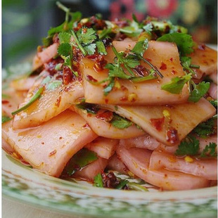

给生活充点电~
给生活充点电~
最早让张家界进入世人眼球的应该是86版的《西游记》，作为每年暑假必播剧，陪伴着一大批80、90后成长，虽然期间有多个版本，但86版经典之作从未被超越！金鞭溪、宝峰湖等景点都是《西游记》的取景拍摄地！后来凭借《阿凡达》再次走进人们的视野，片中潘多拉之星悬浮山，大量原型就来自于张家界。后来也陆陆续续有很多电影来张家界取景，比如《钟馗伏魔：雪妖魔灵》、《心花路放》、《大闹天宫》、《捉妖记》、《大圣归来》......
土家粘贴画:土家粘贴画是一种粘贴在三夹板上的画，其画做工之独特，艺术性之高，都堪一绝。作此画一不用纸、二不用油彩、三不用毛笔、也不用墨汁。原料却是沙石、树皮、芭茅杆、竹笋壳、或碎布片。用此材料作画所表现的武陵山水风光、湘西的古寨风情，栩栩如生，即有山水的效果，又有国画的神韵。
桑植民歌：桑植民歌起源于原始农耕时期的生产劳动，质朴、粗放、风趣、诙谐是其主要的艺术风格。经过千百年的锤炼，桑植民歌在高唱低吟中显现出了独特的艺术魅力。
桑植白族仗鼓舞：桑植白族仗鼓舞又叫“跳邦藏”，“仗鼓舞”是白族的传统舞蹈，因主要道具为仗鼓，长一米二，用木棒为杆而得名。
桑植花灯：桑植花灯是湘西花灯中非常有代表性的一支，它分为文花灯、武花灯、丑花灯等。桑植花灯是汉文化歌舞艺术与桑植当地的土家族、苗族、白族等少数民族的生活和风俗习惯相结合而形成的，具有独特风格的民间歌舞艺术。
| 土家粘贴画 | 国家级非物质文化遗产 |
| 桑植民歌 | 国家级非物质文化遗产 |
| 张家界泼水龙习俗 | 省级非物质文化遗产 |
| 桑植白族仗鼓舞 | 省级非物质文化遗产 |
| 桑植白族游神 | 省级非物质文化遗产 |
| 桑植花灯 | 省级非物质文化遗产 |
| 桑植傩戏 | 省级非物质文化遗产 |
| 土家糊仓习俗 | 省级非物质文化遗产 |
| 桑植围鼓 | 省级非物质文化遗产 |
| 桑植薅草锣鼓 | 市级非物质文化遗产 |
张家界的饮食既具有浓厚的民族特色，又融合了湘菜的精华。辣，是湖南菜的特色，土家菜也不例外，除了辣以外，土家人还特别钟爱腊、酸、腌制菜食。
湘西腊肉：每年临近年关，杀了年猪，将猪肉切成三至五斤一块，擦上盐和各种香料后腌三至五天，待盐及香料浸进肉内，再用竹条或藤条穿串挂到火坑上，以烟火慢慢熏干。熏制得比较好的腊肉一般可保存半年以上。如用桔子皮熏烘，腊肉油中透红，红中透亮，不见烟灰，颜色更显好看。
土家三下锅：说起三下锅，来过张家界的人可谓是无人不知无人不晓，相传明朝嘉靖年间，朝廷征调湘鄂西土司兵上前线抗倭，恰好赶上年关，为不误军机，土司王下令提前一天过年，于是腊肉、豆腐、萝卜一锅煮，叫吃“合菜”，以后演变成了三下锅。除味道佳美，还别有深意。它象征着五谷丰登，合家团聚，反映了土家人不忘先民的光荣传统。
湘西酸萝卜：湘西人腌萝卜别具特色。在湘西城乡，只要有人群来往的地方，就会有卖腌酸萝卜的摊子。湘西人不管男女老幼，不论文人农夫，都喜欢蘸着鲜红的辣子汁吃腌酸萝卜片、酸萝卜梗。
米粉：虽然张家界的米粉不如湖南米粉有名，但是确实是一大特色，是张家界人无法割舍的乡味。
